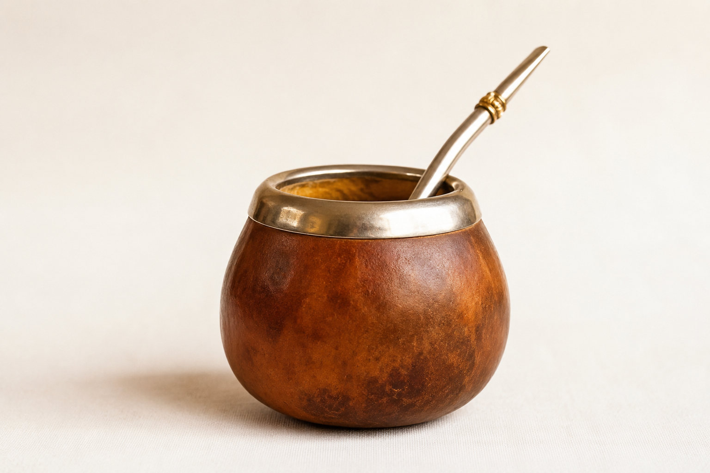
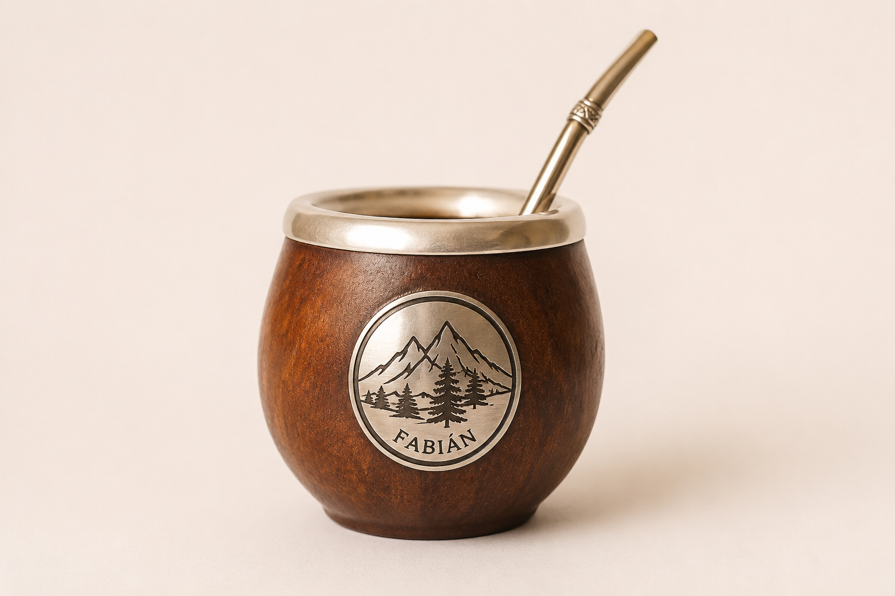
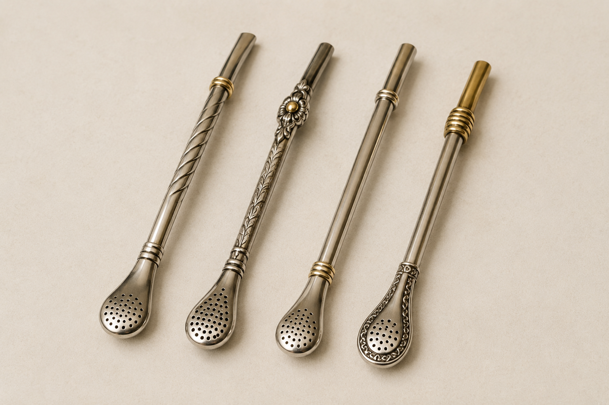
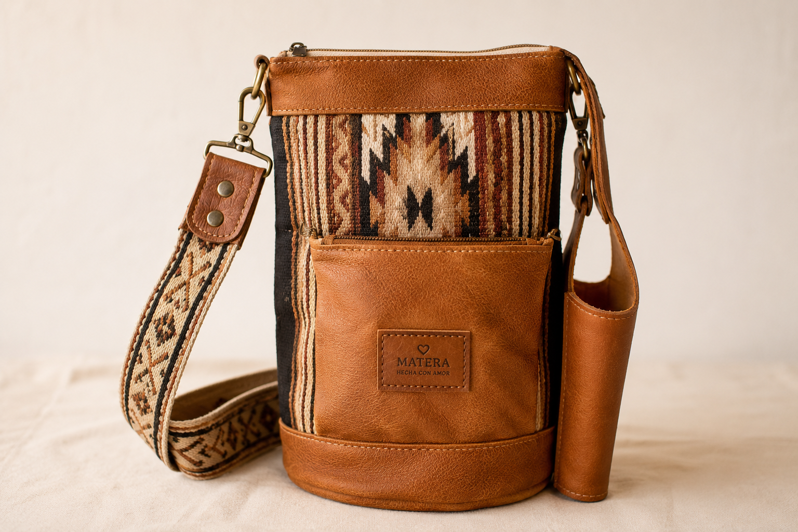
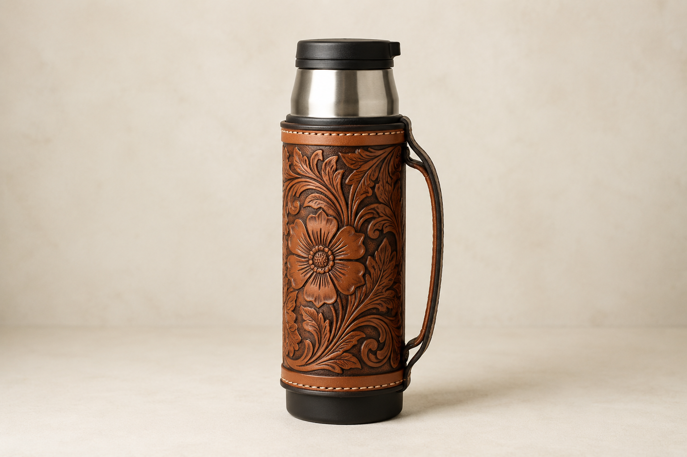
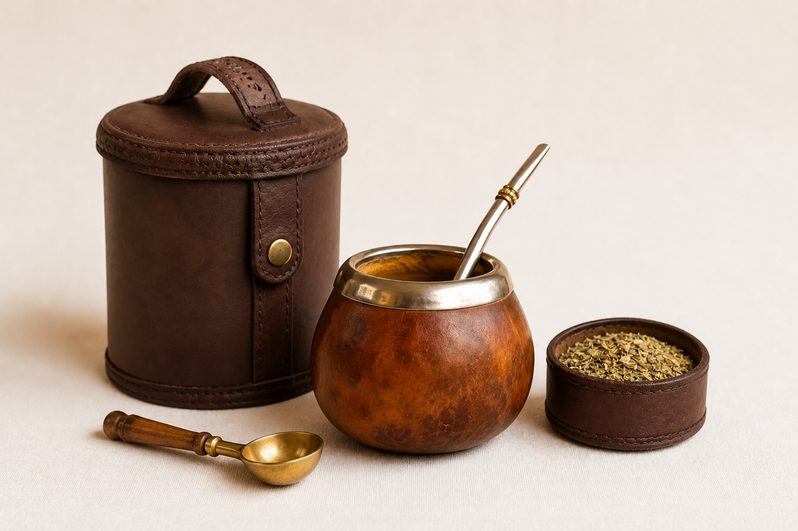

Nuestros Productos
Seleccionados con cuidado, pensados para cada ronda.

Mate de Calabaza
El original. Curado a mano, con virola de alpaca. Para los puristas.
$12.500
Mate de Algarrobo
Torneado a mano en madera de algarrobo. Único, sin dos iguales.
$18.000
Bombillas metalicas
Punta cebadora con filtro de precisión. No pierde un yerbal.
$6.200
Bolso Matero
Bolso matero artesanal de diseño clásico y elegante, confeccionado en ecocuero color suela con detalles funcionales para llevar todo lo necesario.
$30.500
Termo Artesanal 1L
Acero inoxidable con funda de cuero cosida a mano. Dura todo el día.
$24.000
Set Matero Completo
Mate + bombilla + termo + yerba 500g. Todo para empezar la ronda.
$38.500El Arte de Cebar
Mirá cómo preparar el mate perfecto, paso a paso.
Reseñas
Clientes de toda Argentina que ya son parte de la ronda.
"El mate de algarrobo es una obra de arte. Lo tengo hace 6 meses y cada ronda es un placer. La madera agarró un sabor increíble."
"Compré el set completo para regalarle a mi viejo y quedó encantado. La calidad del termo es impresionante, la funda de cuero es de primera."
"La yerba serrana es diferente a todo lo que tomé. Se nota la cura, el sabor dura mucho más que cualquier yerba de supermercado."
"Atención personalizada desde el primer mensaje. Me ayudaron a elegir el mate ideal para curar y me dieron todos los consejos. 10/10."
Contacto
¿Tenés una consulta o querés hacer un pedido especial? Mandanos un mensaje.